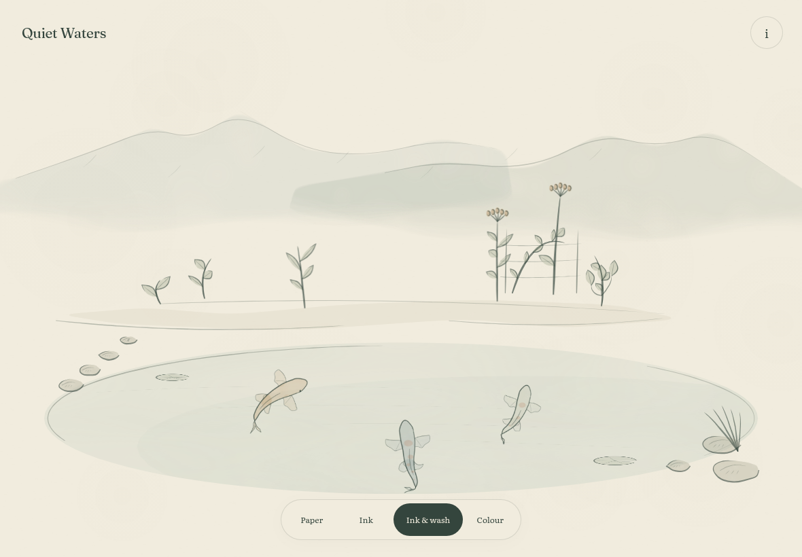
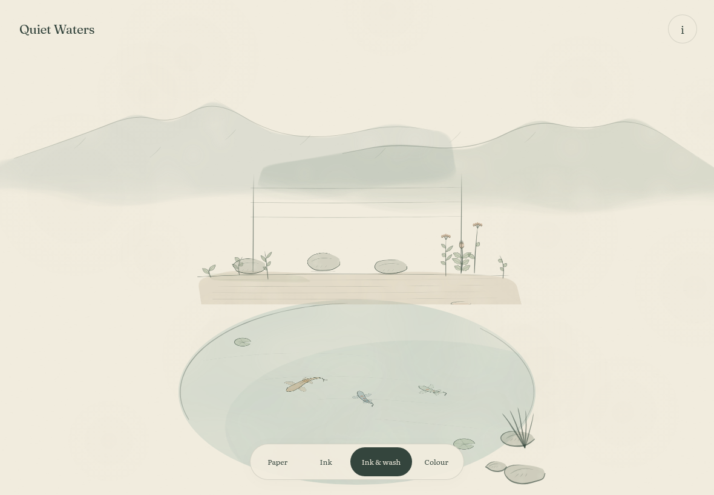

Ink and wash · tablet · noon. The original study and the refined version, captured in the real browser.
Sprint 1 · frozen at ?v=1

Sprint 2 · default

Unretouched browser plates. Reduced motion holds each scene for comparison; the two native recordings show the live pond arrival, dial spread and garden clearing/sowing separately. Koi poses differ between the two versions.